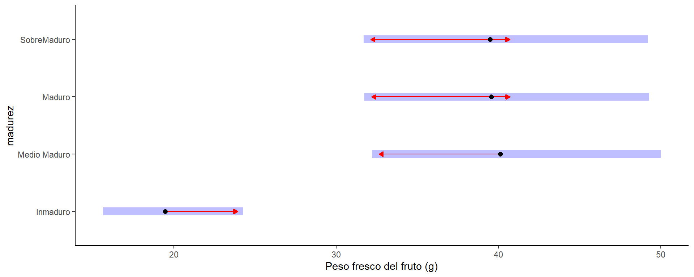

Physical
El objetivo de este trabajo fue estudiar la evolución del tamaño y peso del fruto junto con los contenidos de sólidos solubles y acidez titulable total, junto con los patrones de acumulación de clorofilas, carotenoides, color_L y actividad antioxidante durante la maduración de los frutos de Hexachlamys edulis, para comprender el momento y las condiciones óptimas necesarios para obtener las máximas características nutracéuticas. Los frutos se cosecharon de plantas de H. edulis que crecen en el campo experimental de la Universidad de Morón (Moreno, Buenos Aires, 34°35’4.98” SL, 58°48’52.09” WL, 14 m.s.n.m.).

A caption
Atributos físicos de calidad
Peso fresco del fruto (PFF)
Tabla descriptiva
## # A tibble: 4 × 4
## madurez n Mean sd
## <fct> <int> <dbl> <dbl>
## 1 Inmaduro 10 19.5 8.37
## 2 Medio Maduro 10 40.1 7.61
## 3 Maduro 10 39.6 17.7
## 4 SobreMaduro 10 39.5 8.88Gráfico con desvío estándar

Verificación de supuestos

Anova
## Analysis of Deviance Table (Type II tests)
##
## Response: PFF
## LR Chisq Df Pr(>Chisq)
## madurez 28.506 3 2.844e-06 ***
## ---
## Signif. codes: 0 '***' 0.001 '**' 0.01 '*' 0.05 '.' 0.1 ' ' 1Comparaciones a posteriori
## $emmeans
## madurez response SE df lower.CL upper.CL
## Inmaduro 19.4659 2.112082 36 15.62095 24.25725
## Medio Maduro 40.1207 4.353161 36 32.19596 49.99604
## Maduro 39.5526 4.291521 36 31.74007 49.28811
## SobreMaduro 39.4895 4.284675 36 31.68943 49.20948
##
## Confidence level used: 0.95
## Intervals are back-transformed from the log scale
##
## $contrasts
## contrast ratio SE df null t.ratio p.value
## Inmaduro / Medio Maduro 0.4851835 0.07444871 36 1 -4.713 0.0002
## Inmaduro / Maduro 0.4921522 0.07551803 36 1 -4.620 0.0003
## Inmaduro / SobreMaduro 0.4929386 0.07563870 36 1 -4.610 0.0003
## Medio Maduro / Maduro 1.0143632 0.15564840 36 1 0.093 0.9997
## Medio Maduro / SobreMaduro 1.0159840 0.15589711 36 1 0.103 0.9996
## Maduro / SobreMaduro 1.0015979 0.15368964 36 1 0.010 1.0000
##
## P value adjustment: tukey method for comparing a family of 4 estimates
## Tests are performed on the log scale
Peso seco de fruto (PSF)
Tabla descriptiva
## # A tibble: 4 × 4
## madurez n Mean sd
## <fct> <int> <dbl> <dbl>
## 1 Inmaduro 10 4.14 2.19
## 2 Medio Maduro 10 6.62 2.35
## 3 Maduro 10 5.00 2.84
## 4 SobreMaduro 10 7.10 2.21Gráfico con desvío estándar

Verificación de supuestos

Anova
## Analysis of Deviance Table (Type II tests)
##
## Response: PSF
## LR Chisq Df Pr(>Chisq)
## madurez 8.919 3 0.03039 *
## ---
## Signif. codes: 0 '***' 0.001 '**' 0.01 '*' 0.05 '.' 0.1 ' ' 1Comparaciones a posteriori
## $emmeans
## madurez response SE df lower.CL upper.CL
## Inmaduro 4.1405 0.5949494 36 3.093797 5.541326
## Medio Maduro 6.6225 0.9515886 36 4.948357 8.863044
## Maduro 4.9979 0.7181494 36 3.734450 6.688804
## SobreMaduro 7.0983 1.0199564 36 5.303877 9.499818
##
## Confidence level used: 0.95
## Intervals are back-transformed from the log scale
##
## $contrasts
## contrast ratio SE df null t.ratio p.value
## Inmaduro / Medio Maduro 0.6252171 0.1270495 36 1 -2.311 0.1143
## Inmaduro / Maduro 0.8284479 0.1683478 36 1 -0.926 0.7911
## Inmaduro / SobreMaduro 0.5833087 0.1185334 36 1 -2.653 0.0548
## Medio Maduro / Maduro 1.3250565 0.2692630 36 1 1.385 0.5166
## Medio Maduro / SobreMaduro 0.9329699 0.1895876 36 1 -0.341 0.9861
## Maduro / SobreMaduro 0.7040982 0.1430789 36 1 -1.726 0.3252
##
## P value adjustment: tukey method for comparing a family of 4 estimates
## Tests are performed on the log scaleHumedad
Tabla descriptiva
## # A tibble: 4 × 4
## madurez n Mean sd
## <fct> <int> <dbl> <dbl>
## 1 Inmaduro 10 0.794 0.0231
## 2 Medio Maduro 10 0.835 0.0383
## 3 Maduro 10 0.875 0.0256
## 4 SobreMaduro 10 0.822 0.0263Gráfico con desvío estándar

Verificación de supuestos

Anova
## Analysis of Deviance Table (Type II Wald chisquare tests)
##
## Response: H
## Chisq Df Pr(>Chisq)
## madurez 41.48 3 5.173e-09 ***
## ---
## Signif. codes: 0 '***' 0.001 '**' 0.01 '*' 0.05 '.' 0.1 ' ' 1Comparaciones a posteriori
## $emmeans
## madurez response SE df asymp.LCL asymp.UCL
## Inmaduro 0.7928067 0.009967295 Inf 0.7725910 0.8116633
## Medio Maduro 0.8365799 0.009080258 Inf 0.8179948 0.8536068
## Maduro 0.8753180 0.008095622 Inf 0.8585663 0.8903391
## SobreMaduro 0.8218641 0.009401775 Inf 0.8026853 0.8395513
##
## Confidence level used: 0.95
## Intervals are back-transformed from the logit scale
##
## $contrasts
## contrast odds.ratio SE df null z.ratio p.value
## Inmaduro / Medio Maduro 0.7474628 0.06717554 Inf 1 -3.239 0.0066
## Inmaduro / Maduro 0.5450410 0.05216932 Inf 1 -6.341 <.0001
## Inmaduro / SobreMaduro 0.8293598 0.07320600 Inf 1 -2.120 0.1468
## Medio Maduro / Maduro 0.7291882 0.07248895 Inf 1 -3.177 0.0081
## Medio Maduro / SobreMaduro 1.1095667 0.10238835 Inf 1 1.127 0.6730
## Maduro / SobreMaduro 1.5216465 0.14907813 Inf 1 4.285 0.0001
##
## P value adjustment: tukey method for comparing a family of 4 estimates
## Tests are performed on the log odds ratio scale
Diámetro ecuatorial menor
Tabla descriptiva
## # A tibble: 4 × 4
## madurez n Mean sd
## <fct> <int> <dbl> <dbl>
## 1 Inmaduro 10 31.4 4.67
## 2 Medio Maduro 10 41.4 3.82
## 3 Maduro 10 42.4 8.75
## 4 SobreMaduro 10 44.4 3.77Gráfico con desvío estándar

Verificación de supuestos
Anova
## Analysis of Deviance Table (Type II tests)
##
## Response: Dem
## LR Chisq Df Pr(>Chisq)
## madurez 34.787 3 1.351e-07 ***
## ---
## Signif. codes: 0 '***' 0.001 '**' 0.01 '*' 0.05 '.' 0.1 ' ' 1Comparaciones a posteriori
## $emmeans
## madurez response SE df lower.CL upper.CL
## Inmaduro 31.406 1.408956 36 28.67465 34.39752
## Medio Maduro 41.432 1.858748 36 37.82869 45.37853
## Maduro 42.369 1.900784 36 38.68420 46.40478
## SobreMaduro 44.414 1.992528 36 40.55135 48.64458
##
## Confidence level used: 0.95
## Intervals are back-transformed from the log scale
##
## $contrasts
## contrast ratio SE df null t.ratio p.value
## Inmaduro / Medio Maduro 0.7580131 0.04809239 36 1 -4.367 0.0006
## Inmaduro / Maduro 0.7412495 0.04702882 36 1 -4.719 0.0002
## Inmaduro / SobreMaduro 0.7071194 0.04486342 36 1 -5.462 <.0001
## Medio Maduro / Maduro 0.9778848 0.06204222 36 1 -0.352 0.9847
## Medio Maduro / SobreMaduro 0.9328590 0.05918554 36 1 -1.095 0.6945
## Maduro / SobreMaduro 0.9539560 0.06052405 36 1 -0.743 0.8790
##
## P value adjustment: tukey method for comparing a family of 4 estimates
## Tests are performed on the log scaleDiámetro ecuatorial mayor
Tabla descriptiva
## # A tibble: 4 × 4
## madurez n Mean sd
## <fct> <int> <dbl> <dbl>
## 1 Inmaduro 10 34.3 5.09
## 2 Medio Maduro 10 47.6 4.40
## 3 Maduro 10 48.5 8.22
## 4 SobreMaduro 10 48.7 4.78Gráfico con desvío estándar

Verificación de supuestos

Anova
## Analysis of Deviance Table (Type II tests)
##
## Response: DeM
## LR Chisq Df Pr(>Chisq)
## madurez 47.978 3 2.152e-10 ***
## ---
## Signif. codes: 0 '***' 0.001 '**' 0.01 '*' 0.05 '.' 0.1 ' ' 1Comparaciones a posteriori
## $emmeans
## madurez response SE df lower.CL upper.CL
## Inmaduro 34.306 1.424404 36 31.53546 37.31994
## Medio Maduro 47.610 1.976793 36 43.76504 51.79276
## Maduro 48.469 2.012459 36 44.55466 52.72723
## SobreMaduro 48.732 2.023379 36 44.79642 53.01333
##
## Confidence level used: 0.95
## Intervals are back-transformed from the log scale
##
## $contrasts
## contrast ratio SE df null t.ratio p.value
## Inmaduro / Medio Maduro 0.7205629 0.04231067 36 1 -5.581 <.0001
## Inmaduro / Maduro 0.7077926 0.04156081 36 1 -5.886 <.0001
## Inmaduro / SobreMaduro 0.7039727 0.04133652 36 1 -5.978 <.0001
## Medio Maduro / Maduro 0.9822773 0.05767826 36 1 -0.305 0.9900
## Medio Maduro / SobreMaduro 0.9769761 0.05736698 36 1 -0.397 0.9785
## Maduro / SobreMaduro 0.9946031 0.05840202 36 1 -0.092 0.9997
##
## P value adjustment: tukey method for comparing a family of 4 estimates
## Tests are performed on the log scaleDiámetro polar
Tabla descriptiva
## # A tibble: 4 × 4
## madurez n Mean sd
## <fct> <int> <dbl> <dbl>
## 1 Inmaduro 10 36.3 6.09
## 2 Medio Maduro 10 43.8 7.58
## 3 Maduro 10 38.6 5.65
## 4 SobreMaduro 10 35.7 9.32Gráfico con desvío estándar

Verificación de supuestos

Anova
## Analysis of Deviance Table (Type II tests)
##
## Response: DP
## LR Chisq Df Pr(>Chisq)
## madurez 7.0872 3 0.06917 .
## ---
## Signif. codes: 0 '***' 0.001 '**' 0.01 '*' 0.05 '.' 0.1 ' ' 1Peso seco semillas
Tabla descriptiva
## # A tibble: 4 × 4
## madurez n Mean sd
## <fct> <int> <dbl> <dbl>
## 1 Inmaduro 10 2.19 1.19
## 2 Medio Maduro 10 3.55 1.56
## 3 Maduro 10 3.00 1.55
## 4 SobreMaduro 10 2.83 1.72Gráfico con desvío estándar

Verificación de supuestos

Anova
## Analysis of Deviance Table (Type II tests)
##
## Response: PSS
## LR Chisq Df Pr(>Chisq)
## madurez 4.1333 3 0.2474PSSPSF
Tabla descriptiva
## # A tibble: 4 × 4
## madurez n Mean sd
## <fct> <int> <dbl> <dbl>
## 1 Inmaduro 10 0.546 0.219
## 2 Medio Maduro 10 0.531 0.149
## 3 Maduro 10 0.635 0.221
## 4 SobreMaduro 10 0.520 0.178Gráfico con desvío estándar

Verificación de supuestos

Anova
## Analysis of Deviance Table (Type II tests)
##
## Response: PSSPSF
## LR Chisq Df Pr(>Chisq)
## madurez 2.1045 3 0.551color *L
Descriptive table color_L
## # A tibble: 4 × 6
## madurez n Mean min max sd
## <fct> <int> <dbl> <dbl> <dbl> <dbl>
## 1 Inmaduro 4 68.7 67.6 69.9 0.941
## 2 Medio Maduro 4 67.4 65.5 69.1 1.47
## 3 Maduro 4 72.3 71.9 72.7 0.422
## 4 SobreMaduro 4 71.5 70.7 72.1 0.611
Verificación de supuestos


##
## Shapiro-Wilk normality test
##
## data: color_L_mad_ajuste$residuos
## W = 0.97602, p-value = 0.9242Anova
## Analysis of Variance Table
##
## Response: color_L
## Df Sum Sq Mean Sq F value Pr(>F)
## madurez 3 64.023 21.3410 23.797 2.438e-05 ***
## Residuals 12 10.762 0.8968
## ---
## Signif. codes: 0 '***' 0.001 '**' 0.01 '*' 0.05 '.' 0.1 ' ' 1Comparaciones a posteriori
## $emmeans
## madurez emmean SE df lower.CL upper.CL
## Inmaduro 68.6750 0.4734965 12 67.64334 69.70666
## Medio Maduro 67.3650 0.4734965 12 66.33334 68.39666
## Maduro 72.2825 0.4734965 12 71.25084 73.31416
## SobreMaduro 71.4525 0.4734965 12 70.42084 72.48416
##
## Confidence level used: 0.95
##
## $contrasts
## contrast estimate SE df t.ratio p.value
## Inmaduro - Medio Maduro 1.3100 0.6696252 12 1.956 0.2569
## Inmaduro - Maduro -3.6075 0.6696252 12 -5.387 0.0008
## Inmaduro - SobreMaduro -2.7775 0.6696252 12 -4.148 0.0064
## Medio Maduro - Maduro -4.9175 0.6696252 12 -7.344 <.0001
## Medio Maduro - SobreMaduro -4.0875 0.6696252 12 -6.104 0.0003
## Maduro - SobreMaduro 0.8300 0.6696252 12 1.239 0.6153
##
## P value adjustment: tukey method for comparing a family of 4 estimates
Color *a
Descriptive table color_a
## # A tibble: 4 × 5
## madurez Mean min max sd
## <fct> <dbl> <dbl> <dbl> <dbl>
## 1 Inmaduro 1.26 0.82 1.5 0.312
## 2 Medio Maduro 3.82 2.69 5.04 1.07
## 3 Maduro 5.68 1.66 8.37 2.87
## 4 SobreMaduro 4.32 2.92 5.72 1.16
Verificación de supuestos


##
## Shapiro-Wilk normality test
##
## data: color_a_mad_ajuste$residuos
## W = 0.91557, p-value = 0.1431Anova
## Denom. DF: 12
## numDF F-value p-value
## (Intercept) 1 135.71849 <.0001
## madurez 3 17.22834 1e-04Comparaciones a posteriori
## $emmeans
## madurez emmean SE df lower.CL upper.CL
## Inmaduro 1.2600 0.1557776 9 0.9076065 1.612393
## Medio Maduro 3.8175 0.5338597 9 2.6098254 5.025175
## Maduro 5.6775 1.4360790 9 2.4288636 8.926136
## SobreMaduro 4.3225 0.5816983 9 3.0066070 5.638393
##
## Degrees-of-freedom method: df.error
## Confidence level used: 0.95
##
## $contrasts
## contrast estimate SE df t.ratio p.value
## Inmaduro - Medio Maduro -2.5575 0.5561231 9 -4.599 0.0058
## Inmaduro - Maduro -4.4175 1.4445032 9 -3.058 0.0550
## Inmaduro - SobreMaduro -3.0625 0.6021956 9 -5.086 0.0030
## Medio Maduro - Maduro -1.8600 1.5320996 9 -1.214 0.6339
## Medio Maduro - SobreMaduro -0.5050 0.7895436 9 -0.640 0.9165
## Maduro - SobreMaduro 1.3550 1.5494179 9 0.875 0.8179
##
## Degrees-of-freedom method: df.error
## P value adjustment: tukey method for comparing a family of 4 estimates
Color *b
Descriptive table color_b
## # A tibble: 4 × 5
## madurez Mean min max sd
## <fct> <dbl> <dbl> <dbl> <dbl>
## 1 Inmaduro 6.8 4.54 8.49 1.65
## 2 Medio Maduro 4.68 0.86 8.87 4.30
## 3 Maduro 12.3 10.8 14.2 1.49
## 4 SobreMaduro 6.79 2.9 12.7 4.65
Verificación de supuestos


##
## Shapiro-Wilk normality test
##
## data: color_b_mad_ajuste$residuos
## W = 0.94612, p-value = 0.4308Anova
## Analysis of Variance Table
##
## Response: color_b
## Df Sum Sq Mean Sq F value Pr(>F)
## madurez 3 128.74 42.914 3.8107 0.03957 *
## Residuals 12 135.14 11.261
## ---
## Signif. codes: 0 '***' 0.001 '**' 0.01 '*' 0.05 '.' 0.1 ' ' 1Comparaciones a posteriori
## $emmeans
## madurez emmean SE df lower.CL upper.CL
## Inmaduro 6.80 1.677903 12 3.144164 10.455836
## Medio Maduro 4.68 1.677903 12 1.024164 8.335836
## Maduro 12.33 1.677903 12 8.674164 15.985836
## SobreMaduro 6.79 1.677903 12 3.134164 10.445836
##
## Confidence level used: 0.95
##
## $contrasts
## contrast estimate SE df t.ratio p.value
## Inmaduro - Medio Maduro 2.12 2.372913 12 0.893 0.8084
## Inmaduro - Maduro -5.53 2.372913 12 -2.330 0.1453
## Inmaduro - SobreMaduro 0.01 2.372913 12 0.004 1.0000
## Medio Maduro - Maduro -7.65 2.372913 12 -3.224 0.0321
## Medio Maduro - SobreMaduro -2.11 2.372913 12 -0.889 0.8105
## Maduro - SobreMaduro 5.54 2.372913 12 2.335 0.1444
##
## P value adjustment: tukey method for comparing a family of 4 estimates